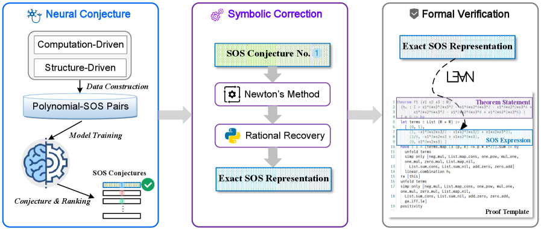
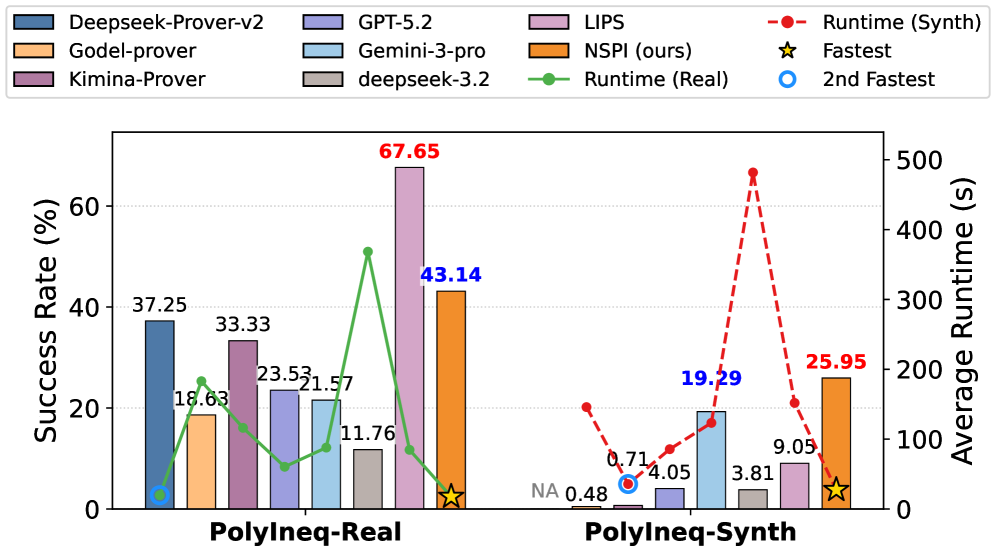

LLM-proposed sum-of-squares decompositions are refined symbolically and the resulting inequality proofs are machine-checked in Lean 4.
Abstract
Automated proving of polynomial inequalities is a fundamental challenge in automated mathematical reasoning, where rich algebraic structure and a rapidly growing certificate search space hinder scalability. Purely symbolic approaches provide strong guarantees but often scale poorly as the number of variables or the degree increases, due to expensive algebraic manipulations and rapidly growing intermediate expressions. In parallel, LLM-guided methods have made notable progress, particularly on competition-style inequalities with a small number of variables. To address the remaining scalability challenges, we propose NSPI, a neuro-symbolic framework that combines the complementary strengths of LLMs and symbolic computation for polynomial-inequality proving. Concretely, an LLM proposes a conjecture in the form of an approximate polynomial Sum-Of-Squares (SOS) decomposition; we refine it via symbolic computation to obtain an exact polynomial SOS representation, which directly proves the target inequality, and we further certify the proof in Lean, yielding an end-to-end pipeline from heuristic discovery to machine-checked proof. Experiments on challenging benchmarks involving polynomials with up to 10 variables demonstrate the effectiveness and scalability of the proposed method.
Problem
Automated proving of polynomial inequalities scales poorly as the number of variables or degree increases, and LLM-based methods struggle beyond a small number of variables, leaving high-dimensional polynomial inequality proving largely unsolved.
Approach
NSPI is a neuro-symbolic framework combining LLMs and symbolic computation. An LLM trained via supervised fine-tuning and progressive reinforcement learning proposes approximate Sum-of-Squares (SOS) decompositions. A symbolic correction module refines them into exact rational SOS representations via Newton iteration and rational recovery. The exact certificates are then verified in Lean using a custom tactic (LLM_Ineq) that automates the formal proof generation.

Figure 1 : Overview of Neuro-Symbolic SOS-based Polynomial Inequality Proving (NSPI) . (1) Neural Conjecture Module : Non-negative polynomial-SOS representation pairs are constructed using computation-driven and structure-driven approaches. A Large Language Model (LLM) is trained on the constructed data to function as an SOS structure conjecturer, which generates corresponding SOS representations
Results
On the PolyIneqBench benchmark with polynomials up to 10 variables, NSPI achieves higher success rates than symbolic solvers (Maple, Z3) and LLM-based provers (DeepSeek-Prover-v2, Goedel-Prover-v2, Kimina-Prover). NSPI is the only method to solve instances with 10 variables. All successful proofs are certified in Lean.

Figure 4 : Performance of different methods on PolyIneqBench (PolyIneq-Real and PolyIneq-Synth).